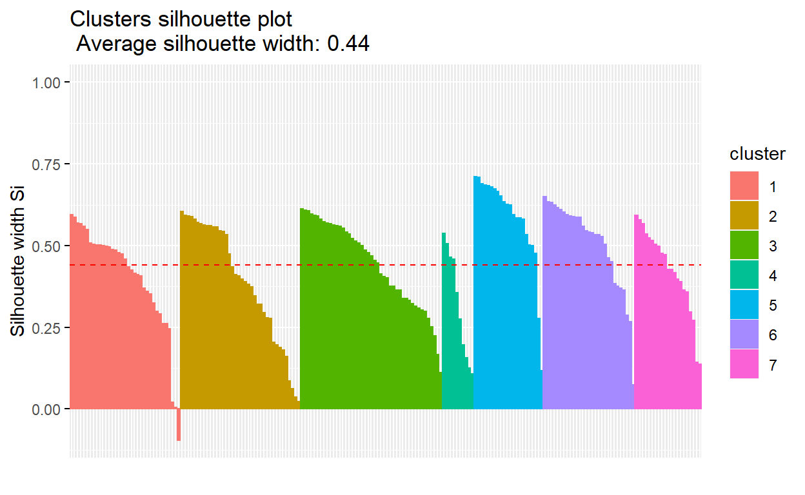

Welcome to this short introduction to k-means! First, let me explain what k-means is to give you a better idea on what we will be learning here.
K-means clustering is a form of unsupervised machine learning clustering algorithm which falls under the “partitioning clustering” umbrella. Unlike supervised machine learning, unsupervised ML does not have access to ground truth to compare the output of the clustering algorithm to the true labels to evaluate its performance. We only want to try to investigate the structure of the data by grouping the data points into distinct subgroups that are as similar together as possible. It is a very popular ML clustering algorithm, and very simple to implement in any data set. The other type of clustering is Hierachical clustering, which we will not be touching on here in this post. However, within partitioning clustering, we also have another algorithm called Fuzzy C-Means clustering.
The main difference between these two algorithms is that K-means clustering assumes that every data point belongs to one single “cluster”. Fuzzy C-Means clustering, on the other hand, relaxes this assumption and provides leeway for some data points to be in two or more clusters. Where you would use K-means clustering for understanding simple patterns in the data set (i.e., what are the characteristics of certain groups), you would use Fuzzy C-Means clustering when the group membership criteria are not as clear cut. In both cases, the objective is straightforward, group similar data points together to uncover underlying patterns.
For the purposes of this tutorial, we will just focus on K-means clustering.
For K-means to perform its function, it looks for a fixed number (k) of clusters in a dataset. A cluster refers to a collection of data points aggregated together because of certain similarities. You first provide an initial k value to determine the preliminary model fit. Based on the accuracy of this model, you then increase or decrease the number of clusters that the model should output. We will cover the optimal method to determining the best k value, but for now, understand that you provide an arbitrary number of k and develop your model from that.
Understanding Our Data
Let’s begin by first understanding what kind of data we are working with. You can download the data from Kaggle
CustomerID Gender Age Annual.Income..k.. Spending.Score..1.100.
1 1 Male 19 15 39
2 2 Male 21 15 81
3 3 Female 20 16 6
4 4 Female 23 16 77
5 5 Female 31 17 40
6 6 Female 22 17 76Here, we have four usable data columns: Gender, Age, Annual income and Spending Score. For us to generate meaningful k-means clusters, we first need to ensure that the data we have are numbers, not factors or characters. Because Gender is in characters, we either can filter out Males and Females into their separate data sets, or, we can include them into the analysis by dummy-coding them. We will include them into the analysis by dummy coding them
df$Gender[df$Gender == "Male"] <- 1
df$Gender[df$Gender == "Female"] <- 2
df$Gender <- as.numeric(df$Gender)
Because CustomerID is meaningless, merely as a way to differentiate customers, we should remove it from the dataframe to ensure only the relevant data is used for clustering
df <- df[,2:5]
head(df)
Gender Age Annual.Income..k.. Spending.Score..1.100.
1 1 19 15 39
2 1 21 15 81
3 2 20 16 6
4 2 23 16 77
5 2 31 17 40
6 2 22 17 76Our dataframe is now prepared for clustering analysis. Before we proceed, let us try to understand what we are trying to learn from this analysis. In the dataframe, you can see the age, annual income and spending score attached to each customer. One insightful data that we can try to garner from this analysis is to determine the characteristics of subgroups. For example:
- Would older adults with a higher annual income have a higher spending score or would they spend less?
- Would there be any difference when we compare between genders?
These are some questions that we can answer based on the clustering analysis that we will implement. Now, let us load in the required packages and run the clustering analysis
Implementing K-Means Clustering Algorithm
Let’s break this down step-by-step:
- We called the kmeans function from the cluster package
- Kmeans function accepts several arguments, the first is to indicate what dataframe the analysis will be based on, in this case “df”
- The other two arguments centers and nstart are core arguments in the k-means analysis.
- centers = Determines the number of centroids in a given dataset. Centroids are imaginary or real locations representing the center of a cluster
- nstart = Specifies the number of random data sets used to run the algorithm. Optionally, you can also explicitly determine how many times this process runs by including a iter.max argument (default = 10). Andrea Grianti provides an excellent delineation between nstart and interations, both have similar but distinct meanings:
if you want 3 clusters and you specify nstart = 10 it extracts 3 sets of data, 10 times, and for each of these times, the algorithm is run (up to iter.max = # of iterations) and the centroid setting that outputs the smallest within-cluster sum of squares is then chosen as the result - Andrea Grianti -
- In the above function, we arbitrarily determined the number of centers to be 5 and to sample our dataset using 5 hypothetical centroids 20 times to find the setting with the minimum amount of variance (i.e., within-cluster sum of squares). Because we did not determine the number of max interations, it defaults to 10 interations, that is, it runs the sampling for the minimum within-cluster SS 10 times.
Interpreting K-Means Clustering Output
Below is the output from our clustering analysis
K-means clustering with 5 clusters of sizes 79, 39, 23, 23, 36
Cluster means:
Gender Age Annual.Income..k.. Spending.Score..1.100.
1 1.582278 43.08861 55.29114 49.56962
2 1.538462 32.69231 86.53846 82.12821
3 1.608696 45.21739 26.30435 20.91304
4 1.608696 25.52174 26.30435 78.56522
5 1.472222 40.66667 87.75000 17.58333
Clustering vector:
[1] 3 4 3 4 3 4 3 4 3 4 3 4 3 4 3 4 3 4 3 4 3 4 3 4 3 4 3 4 3 4 3 4
[33] 3 4 3 4 3 4 3 4 3 4 3 4 3 4 1 1 1 1 1 1 1 1 1 1 1 1 1 1 1 1 1 1
[65] 1 1 1 1 1 1 1 1 1 1 1 1 1 1 1 1 1 1 1 1 1 1 1 1 1 1 1 1 1 1 1 1
[97] 1 1 1 1 1 1 1 1 1 1 1 1 1 1 1 1 1 1 1 1 1 1 1 1 1 1 1 2 5 2 1 2
[129] 5 2 5 2 5 2 5 2 5 2 5 2 5 2 1 2 5 2 5 2 5 2 5 2 5 2 5 2 5 2 5 2
[161] 5 2 5 2 5 2 5 2 5 2 5 2 5 2 5 2 5 2 5 2 5 2 5 2 5 2 5 2 5 2 5 2
[193] 5 2 5 2 5 2 5 2
Within cluster sum of squares by cluster:
[1] 30157.266 13982.051 8954.087 4627.739 17678.472
(between_SS / total_SS = 75.6 %)
Available components:
[1] "cluster" "centers" "totss" "withinss"
[5] "tot.withinss" "betweenss" "size" "iter"
[9] "ifault" There are several important things to note in this output, let us break it down:
The first line informs us that 5 clusters were created, and the size of each cluster (i.e., how many data points are included in the cluster) are provided. This gives us a general idea on how many subgroups there are and what are their distribution in our data set.
The second output provides us with the means of each of our variables according to our clusters. The gender column does not provide meaningful data here because it does not make sense for someone to be 1.60 of a gender. The reason why we obtained this value is because the mean is estimated from the centroid location.
The clustering vector provides us with a glimpse which data point belongs to which cluster. This information will be useful later on when we aggregate this vector to the main data set, so that we can identify which customer belongs to which cluster.
The last output is essential in understanding your clustering accuracy. Remember, the objective here is not to obtain a 100% accuracy. Why? Because a 100% clustering accuracy means that all 200 of our data points are neatly categorized into 200 clusters, which, as you can tell, is not particularly informative
- Here you can see our within sum of squares by cluster results in a 75.6% accuracy, meaning, 75.6% of the variance is captured by the clustering algorithm, which is not bad, given that we randomly set k to be 5
Determining Optimal k Value: Elbow Method
Recall that in the earlier section, we mention that there is a method to optimally calculate for the best number of clusters for your dataset? Here, we will explore this method, first, we create a custom function to plot the within sum of squares, iterating from 1 to n number of centroids. We will not cover how to create a function here, but this tutorial provides a good introduction to creating custom functions in R.
wssplot <- function(data, num.centroid=15, seed=123){
wss <- (nrow(data) - 1)*sum(apply(data,2,var))
for (i in 2:num.centroid) {
set.seed(seed)
wss[i] <- sum(kmeans(data, centers = i)$withinss)}
plot(1:num.centroid, wss, type = "b", xlab = "Number of groups",
ylab = "Sum of squares within a group")}
wssplot(df, num.centroid = 30)

In the above function, we set the maximum number of centroids to be 30, that is, the function loops through the kmeans function by iterating the number of centroids from 1 to 30. The within sum of squares results of each iteration is then taken and plotted.
Here, you can see that though there was a blip in wss values between k = 6 and k = 7, it appears that the first initial drop in wss values occured between k = 4 and k = 5. This means that 5 clusters appear to be the optimal number for our data set.
Determining Optimal k Value: Silhoutte Method
Another way to determine the optimal k value, and have been argued to be a better approach than the Elbow method. To begin, let us load our required libraries and begin our Silhoutte (SI) analysis
library(factoextra)
df_sil <- silhouette(model$cluster, dist(df))
fviz_silhouette(df_sil)
cluster size ave.sil.width
1 1 79 0.37
2 2 39 0.53
3 3 23 0.42
4 4 23 0.60
5 5 36 0.43
The fviz_silhouette () function outputs a graph that provides us a Silhoutte Width value (Y-Axis). This value ranges from -1 to 1. Essentially, a positive SI value means that the data points within that cluster is well matched within its cluster and poorly matched with its neighbouring cluster. A negative SI value would mean that clustering configuration was inappropriate, perhaps either having too many or too few clusters.
Here you can see that all our SI analysis is not too bad, we our clusters average around 0.44 SI. We can try to rerun the analysis using a higher k value. Based on the elbow method, it would seem that k = 7 may provide a better clustering fit
cluster size ave.sil.width
1 1 35 0.40
2 2 38 0.39
3 3 45 0.44
4 4 10 0.32
5 5 22 0.58
6 6 29 0.50
7 7 21 0.42
However, running the clustering algorithm with k = 7 does not change the SI value at all, remaining at an average of 0.44 SI. Furthermore, it would appear that some data points in our clusters are in a worse position than if we remained k at 5. Hence, to reduce overfitting and to adjust for that negative SI data point, we will remain with k at 5.
Analyzing Patterns in Our Clusters
After all that analytical work, we can finally start discovering underlying patterns in our clusters! We first need a couple of other packages, let’s load them up and create some plots for our interpretation
Recall in the earlier section, we talked about the Clustering Vector? Since we have completed our clustering analysis, we will now aggregate the vectors as factors back into our main dataframe. This will help us in plotting based on clusters. The clusters have to be aggregated back as factors, not as vectors or your plot will come out quite weird
The output of this cluster analysis is up for interpretation and highly depends on what kind of information you require. Here are some notable analysis that can be garnered from this graph
Cluster 3 and 4 is made up of young adults. Cluster 3 are slightly older young adults with high annual income and high spending score. Cluster 4 are made up of younger young adults with low annual income, but concerningly with a high spending score, indicating that this age group may be spending above their means.
Clusters 1, 2 and 5 is made up of both young and older adults with varying annual incomes and spending scores.
Importantly, Cluster 2, which makes up the majority of our customers, have a moderate annual income and spend according to their means. This suggest that the the types of retail shops in this mall should ideally target these audiences. Hence, based on this information, we would suggest that the mall refrain from bringing in too many luxury brands, given that the majority of their customers are from the middle-income bracket and are not high spenders.